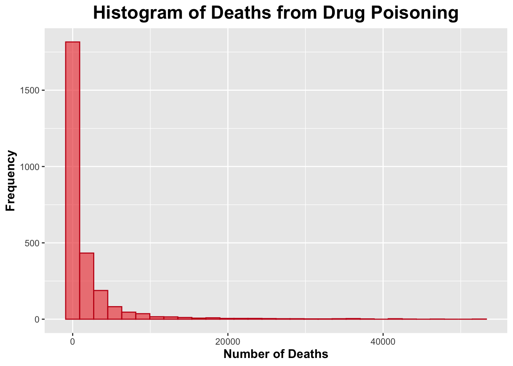
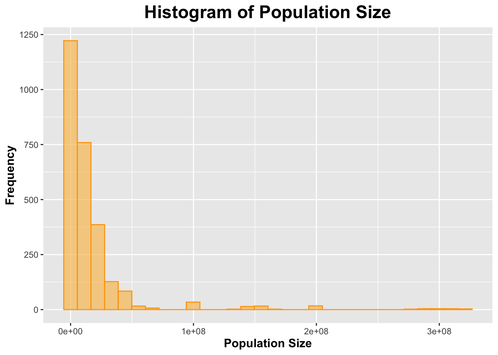
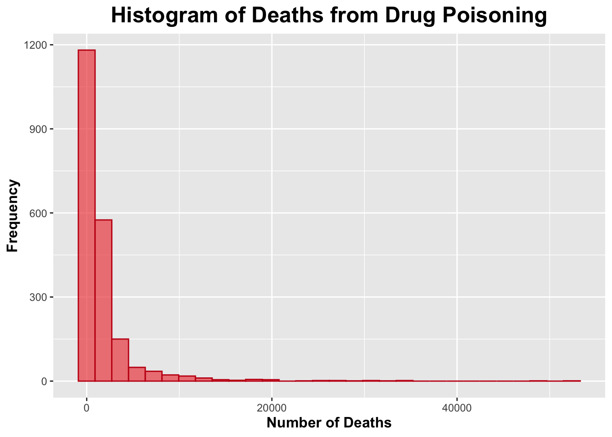
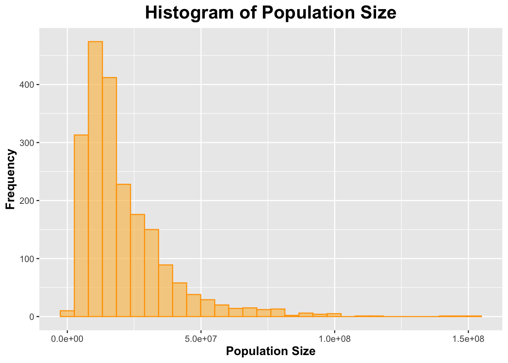

The data used in this exercise will be using in this exercise is called “NCHS - Drug Poisoning Mortality by State: United States.” I downloaded this dataset from the CDC website linked here: https://data.cdc.gov/NCHS/NCHS-Drug-Poisoning-Mortality-by-State-United-Stat/jx6g-fdh6/about_data. This dataset contains entries on drug poisoning deaths in the U.S. and at the state-level. The data set’s time range is from 1999 to 2015.
Loading in the Data
First, I will load any packages that may be of help in this exercise.
library(dplyr)
Attaching package: 'dplyr'
The following objects are masked from 'package:stats':
filter, lag
The following objects are masked from 'package:base':
intersect, setdiff, setequal, union
── Conflicts ────────────────────────────────────────── tidyverse_conflicts() ──
✖ dplyr::filter() masks stats::filter()
✖ dplyr::lag() masks stats::lag()
ℹ Use the conflicted package (<http://conflicted.r-lib.org/>) to force all conflicts to become errors
library(ggplot2)
Now I will load in the CDC data for this exercise that was described in the section above. I will call it “data”.
data <-read.csv("drug-data.csv")
I will use the summary(), dim(), and head() functions to get a better look at the data.
summary(data)
Year Sex Age Race.and.Hispanic.Origin
Min. :1999 Length:2703 Length:2703 Length:2703
1st Qu.:2003 Class :character Class :character Class :character
Median :2007 Mode :character Mode :character Mode :character
Mean :2007
3rd Qu.:2011
Max. :2015
State Deaths Population Crude.Death.Rate
Length:2703 Min. : 1 Min. : 238163 Min. : 0.00
Class :character 1st Qu.: 124 1st Qu.: 2723372 1st Qu.: 3.90
Mode :character Median : 478 Median : 6403290 Median : 8.80
Mean : 1873 Mean : 16586603 Mean :10.19
3rd Qu.: 1406 3rd Qu.: 18116192 3rd Qu.:14.30
Max. :52404 Max. :321418820 Max. :53.50
Standard.Error.for.Crude.Rate Low.Confidence.Limit.for.Crude.Rate
Min. :0.0000 Min. : 0.000
1st Qu.:0.2000 1st Qu.: 3.300
Median :0.4000 Median : 8.000
Mean :0.4271 Mean : 9.364
3rd Qu.:0.6000 3rd Qu.:13.200
Max. :1.8000 Max. :52.200
Upper.Confidence.Limit.for.Crude.Rate Age.adjusted.Rate
Min. : 0.10 Min. : 1.80
1st Qu.: 4.60 1st Qu.: 7.40
Median : 9.60 Median :10.80
Mean :11.07 Mean :11.24
3rd Qu.:15.40 3rd Qu.:14.00
Max. :54.80 Max. :41.50
NA's :1632
Standard.Error.Age.adjusted.Rate Lower.Confidence.Limit.for.Age.adjusted.rate
Min. :0.000 Min. : 0.9
1st Qu.:0.300 1st Qu.: 6.5
Median :0.500 Median : 9.8
Mean :0.543 Mean :10.2
3rd Qu.:0.700 3rd Qu.:12.8
Max. :1.900 Max. :38.4
NA's :1632 NA's :1632
Upper.Confidence.Limit.for.Age.adjusted.Rate State.Crude.Rate.in.Range
Min. : 2.20 Length:2703
1st Qu.: 8.20 Class :character
Median :11.80 Mode :character
Mean :12.34
3rd Qu.:15.30
Max. :44.60
NA's :1632
US.Crude.Rate US.Age.adjusted.Rate
Min. : 6.00 Min. : 6.10
1st Qu.: 8.90 1st Qu.: 8.90
Median :12.00 Median :11.90
Mean :11.01 Mean :10.96
3rd Qu.:13.20 3rd Qu.:13.10
Max. :16.30 Max. :16.30
dim(data)
[1] 2703 18
head(data)
Year Sex Age Race.and.Hispanic.Origin State Deaths
1 2004 Both Sexes All Ages All Races-All Origins Texas 1813
2 2012 Both Sexes All Ages All Races-All Origins Arizona 1134
3 2008 Male All Ages Hispanic United States 1875
4 2009 Both Sexes All Ages All Races-All Origins Washington 987
5 2015 Female All Ages All Races-All Origins United States 19447
6 2008 Both Sexes All Ages All Races-All Origins Utah 468
Population Crude.Death.Rate Standard.Error.for.Crude.Rate
1 22394023 8.1 0.2
2 6553255 17.3 0.5
3 24322906 7.7 0.2
4 6667426 14.8 0.5
5 163189523 11.9 0.1
6 2663029 17.6 0.8
Low.Confidence.Limit.for.Crude.Rate Upper.Confidence.Limit.for.Crude.Rate
1 7.7 8.5
2 16.3 18.3
3 7.4 8.1
4 13.9 15.7
5 11.7 12.1
6 16.0 19.2
Age.adjusted.Rate Standard.Error.Age.adjusted.Rate
1 8.2 0.2
2 17.7 0.5
3 8.4 0.2
4 14.3 0.5
5 11.8 0.1
6 19.0 0.9
Lower.Confidence.Limit.for.Age.adjusted.rate
1 7.8
2 16.6
3 8.0
4 13.4
5 11.7
6 17.2
Upper.Confidence.Limit.for.Age.adjusted.Rate State.Crude.Rate.in.Range
1 8.5 7–9.8
2 18.7 15.2–41.5
3 8.8 8.3–8.4
4 15.2 12.3–15.2
5 12.0 10.6–11.8
6 20.7 15.2–41.5
US.Crude.Rate US.Age.adjusted.Rate
1 9.4 9.4
2 13.2 13.1
3 12.0 11.9
4 12.1 11.9
5 16.3 16.3
6 12.0 11.9
As seen by the output, this dataset contains 18 variables with 2,703 observations.
Processing the Data
Below, I will select the variables that I will work with in this exercise. I will reassign this to a new dataset called “processed_data”.
Year Sex Age Race_and_Hispanic_Origin State Deaths
1 2004 Both Sexes All Ages All Races-All Origins Texas 1813
2 2012 Both Sexes All Ages All Races-All Origins Arizona 1134
3 2008 Male All Ages Hispanic United States 1875
4 2009 Both Sexes All Ages All Races-All Origins Washington 987
5 2015 Female All Ages All Races-All Origins United States 19447
6 2008 Both Sexes All Ages All Races-All Origins Utah 468
Population Crude_Death_Rate
1 22394023 8.1
2 6553255 17.3
3 24322906 7.7
4 6667426 14.8
5 163189523 11.9
6 2663029 17.6
Exploratory/Descriptive Analysis and Frequency Table
I will create a scatterplot to assess the relationship between deaths and population. Then, I will use the cor() function to obtain the correlation coefficient to determine the strength of this relationship.
ggplot(processed_data, aes(x = Deaths, y = Population)) +geom_point(color ="#429bf9") +# giving the points of the scatterplot a blue colorlabs(title ="Scatterplot of Relationship between Number of Deaths \n From Drug Poisoning and Population Size",x ="Number of Deaths",y ="Size of Population") +# labeling axes and titles!theme(legend.position ="none", plot.title =element_text(size =18, face ="bold", hjust =0.5), axis.title.x =element_text(size =12, face ="bold"), axis.title.y =element_text(size =12, face ="bold")) # removing legend; making title and axes bold and giving them a larger font size
The scatterplot above, shows a positive linear relationship between the number of deaths from drug poisoning and the size of the population. The correlation coefficient is 0.8997261, which indicates a strong positive linear relationship.
Now, I will assess the relationship between year and death. Then, I will use the cor() function to obtain the correlation coefficient to determine the strength of this relationship.
ggplot(processed_data, aes(x = Year, y = Deaths)) +geom_point(color ="#33d11a") +# giving the points of the scatterplot a green colorlabs(title ="Scatterplot of Relationship between Number of Deaths \n From Drug Poisoning and Year",x ="Year",y ="Number of Deaths") +# labeling axes and titles!theme(legend.position ="none", plot.title =element_text(size =18, face ="bold", hjust =0.5), axis.title.x =element_text(size =12, face ="bold"), axis.title.y =element_text(size =12, face ="bold")) # removing legend; making title and axes bold and giving them a larger font size
The scatterplot above shows that there may be a slight relationship between year and number deaths due to drug poisoning. The correlation coefficient is 0.1246065; this indicates a VERY weak relationship (possibly no realtionship at all).
I will create a correlation matrix. I did this in the “data-exercise” and found it to be helpful.
# use only numberic variables!cor_matrix <-cor(processed_data %>%select(where(is.numeric)))# print out!print(cor_matrix)
Year Deaths Population Crude_Death_Rate
Year 1.00000000 0.1246065 0.01947317 0.32354160
Deaths 0.12460651 1.0000000 0.89972612 0.31923101
Population 0.01947317 0.8997261 1.00000000 0.06736837
Crude_Death_Rate 0.32354160 0.3192310 0.06736837 1.00000000
I will create a frequency table to display the total number of deaths from drug poisoning by year.
# Create frequency table for the total number of deaths by yeardeath_by_year <- processed_data %>%group_by(Year) %>%summarise(Total_Deaths =sum(Deaths, na.rm =TRUE)) %>%arrange(Year)# View the frequency tabledeath_by_year
I will assess the distribution of both the number of deaths due to drug poisoning and the population size.
# Deathsggplot(processed_data, aes(x = Deaths)) +geom_histogram(bins =30, fill ="#ee5050", color ="#c41616", alpha =0.7) +labs(title ="Histogram of Deaths from Drug Poisoning",x ="Number of Deaths",y ="Frequency") +theme(plot.title =element_text(size =18, face ="bold", hjust =0.5),axis.title.x =element_text(size =12, face ="bold"),axis.title.y =element_text(size =12, face ="bold"))

# Population Sizeggplot(processed_data, aes(x = Population)) +geom_histogram(bins =30, fill ="#f9c363", color ="#ffa303", alpha =0.7) +labs(title ="Histogram of Population Size",x ="Population Size",y ="Frequency") +theme(plot.title =element_text(size =18, face ="bold", hjust =0.5),axis.title.x =element_text(size =12, face ="bold"),axis.title.y =element_text(size =12, face ="bold"))

Both histograms for number of deaths due to drug poisoning and population size appeared to be skewed to the right.
I will create a table to display the mean and standard deviations of the number of deaths due to drug poisoning from 1999 to 2015 as well as the population size from 1999 to 2015.
# A tibble: 76 × 2
`**Characteristic**` `**N = 2,703**`
<chr> <chr>
1 Year 2,007 2,007 1,999 2,015 5
2 Sex <NA>
3 Both Sexes 1,479 2,703 55%
4 Female 612 2,703 23%
5 Male 612 2,703 23%
6 Age <NA>
7 15-24 years 204 2,703 7.5%
8 25-34 years 204 2,703 7.5%
9 35-44 years 204 2,703 7.5%
10 45-54 years 204 2,703 7.5%
11 55-64 years 204 2,703 7.5%
12 65-74 years 204 2,703 7.5%
13 75+ years 204 2,703 7.5%
14 All Ages 1,071 2,703 40%
15 Less than 15 years 204 2,703 7.5%
16 Race_and_Hispanic_Origin <NA>
17 All Races-All Origins 1,326 2,703 49%
18 Hispanic 459 2,703 17%
19 Non-Hispanic Black 459 2,703 17%
20 Non-Hispanic White 459 2,703 17%
21 State <NA>
22 Alabama 17 2,703 0.6%
23 Alaska 17 2,703 0.6%
24 Arizona 17 2,703 0.6%
25 Arkansas 17 2,703 0.6%
26 California 17 2,703 0.6%
27 Colorado 17 2,703 0.6%
28 Connecticut 17 2,703 0.6%
29 Delaware 17 2,703 0.6%
30 District of Columbia 17 2,703 0.6%
31 Florida 17 2,703 0.6%
32 Georgia 17 2,703 0.6%
33 Hawaii 17 2,703 0.6%
34 Idaho 17 2,703 0.6%
35 Illinois 17 2,703 0.6%
36 Indiana 17 2,703 0.6%
37 Iowa 17 2,703 0.6%
38 Kansas 17 2,703 0.6%
39 Kentucky 17 2,703 0.6%
40 Louisiana 17 2,703 0.6%
41 Maine 17 2,703 0.6%
42 Maryland 17 2,703 0.6%
43 Massachusetts 17 2,703 0.6%
44 Michigan 17 2,703 0.6%
45 Minnesota 17 2,703 0.6%
46 Mississippi 17 2,703 0.6%
47 Missouri 17 2,703 0.6%
48 Montana 17 2,703 0.6%
49 Nebraska 17 2,703 0.6%
50 Nevada 17 2,703 0.6%
51 New Hampshire 17 2,703 0.6%
52 New Jersey 17 2,703 0.6%
53 New Mexico 17 2,703 0.6%
54 New York 17 2,703 0.6%
55 North Carolina 17 2,703 0.6%
56 North Dakota 17 2,703 0.6%
57 Ohio 17 2,703 0.6%
58 Oklahoma 17 2,703 0.6%
59 Oregon 17 2,703 0.6%
60 Pennsylvania 17 2,703 0.6%
61 Rhode Island 17 2,703 0.6%
62 South Carolina 17 2,703 0.6%
63 South Dakota 17 2,703 0.6%
64 Tennessee 17 2,703 0.6%
65 Texas 17 2,703 0.6%
66 United States 1,836 2,703 68%
67 Utah 17 2,703 0.6%
68 Vermont 17 2,703 0.6%
69 Virginia 17 2,703 0.6%
70 Washington 17 2,703 0.6%
71 West Virginia 17 2,703 0.6%
72 Wisconsin 17 2,703 0.6%
73 Wyoming 17 2,703 0.6%
74 Deaths 1,873 478 1 52,404 4,525
75 Population 16,586,603 6,403,290 238,163 321,418,820 34,492,886
76 Crude_Death_Rate 10 9 0 54 8
Generate the synthetic data
I would like to generate the synthetic data according to the composition of categorical variable and the distribution of continuous variable. I tried to use ChatGPT to generate the data for me, and here is my initial prompt: “Generate synthetic data: there are 8 variables and 2073 observations. For the continuous variable Year, it is from 1,999 to 2015, mean 2,007, median 2,007. For Sex, Age, Race_and_Hispanic_Origin, and State, refer to the gtsummary tibble. For Population, it is from 238,163 to 321,418,820, mean 16,586,603, median 6,403,290, sd 34,492,886, the distribution is skewed to the right. For Deaths, it is from 1 to 52,404, mean 1,873, median 478, sd 4,525, the distribution is skewed to the right. Crude_Death_Rate is from Deaths divided by Population. There is a positive linear relationship between Deaths and Population. The correlation coefficient is 0.8997. Give me the code to generate such data.” Then I manually add the specific content in the code to generate categorical data. At first, I tired to add correlation between Deaths and Population, but I found things get more and more complicated and could not work. I suspect that the correlation in the original data was due to some outliers, so I eventually generate the deaths data without considering the correlation.
set.seed(123) # Set seed for reproducibility# Number of observationsn <-2073# 1. Generate 'Year' (Continuous Variable)year_min <-1999year_max <-2015year_mean <-2007year_median <-2007# Generating Year as uniformly distributed between min and maxyear <-sample(year_min:year_max, n, replace =TRUE)# 2. Generate 'Sex' (Categorical Variable)sex_levels <-c("Both Sexes", "Female", "Male")sex_probs <-c(0.55, 0.225, 0.225) sex <-sample(sex_levels, n, replace =TRUE, prob = sex_probs)# 3. Generate 'Age' (Categorical Variable)age_levels <-c("15-24 years", "25-34 years", "35-44 years", "45-54 years", "55-64 years", "65-74 years", "75+ years", "All Ages", "Less than 15 years")age_probs <-c(0.075, 0.075, 0.075, 0.075, 0.075, 0.075, 0.075, 0.4, 0.075) age <-sample(age_levels, n, replace =TRUE, prob = age_probs)# 4. Generate 'Race_and_Hispanic_Origin' (Categorical Variable)race_levels <-c("All Races-All Origins", "Hispanic", "Non-Hispanic Black", "Non-Hispanic White")race_probs <-c(0.49, 0.17, 0.17, 0.17) race_and_hispanic_origin <-sample(race_levels, n, replace =TRUE, prob = race_probs)# 5. Generate 'State' (Categorical Variable)state_levels <-c("Alabama", "Alaska", "Arizona", "Arkansas", "California", "Colorado", "Connecticut", "Delaware", "District of Columbia", "Florida", "Georgia", "Hawaii", "Idaho", "Illinois", "Indiana", "Iowa", "Kansas", "Kentucky", "Louisiana", "Maine", "Maryland", "Massachusetts", "Michigan", "Minnesota", "Mississippi", "Missouri", "Montana", "Nebraska", "Nevada", "New Hampshire", "New Jersey", "New Mexico", "New York", "North Carolina", "North Dakota", "Ohio", "Oklahoma", "Oregon", "Pennsylvania", "Rhode Island", "South Carolina", "South Dakota", "Tennessee", "Texas", "United States", "Utah", "Vermont", "Virginia", "Washington", "West Virginia", "Wisconsin", "Wyoming") state_probs <-c(0.0063, 0.0063, 0.0063, 0.0063, 0.0063, 0.0063, 0.0063, 0.0063, 0.0063, 0.0063, 0.0063, 0.0063, 0.0063, 0.0063, 0.0063, 0.0063, 0.0063, 0.0063, 0.0063, 0.0063, 0.0063, 0.0063, 0.0063, 0.0063, 0.0063, 0.0063, 0.0063, 0.0063, 0.0063, 0.0063, 0.0063, 0.0063, 0.0063, 0.0063, 0.0063, 0.0063, 0.0063, 0.0063, 0.0063, 0.0063, 0.0063, 0.0063, 0.0063, 0.0063, 0.6787, 0.0063, 0.0063, 0.0063, 0.0063, 0.0063,0.0063, 0.0063) state <-sample(state_levels, n, replace =TRUE, prob = state_probs)# 6. Generate 'Population' (Continuous Variable) - skewed to the rightpopulation_min <-238163population_max <-321418820population_mean <-16586603population_median <-6403290population_sd <-34492886# Generate skewed population data using a log-normal distributionpopulation <-rlnorm(n, meanlog =log(population_mean), sdlog =log(population_sd / population_mean))# Ensure values are within rangepopulation <-pmin(pmax(population, population_min), population_max)# 7. Generate 'Deaths' (Continuous Variable) - skewed to the rightdeaths_min <-1deaths_max <-52404deaths_mean <-1873deaths_median <-478deaths_sd <-4525# Compute meanlog correctlymeanlog <-log(deaths_mean) -0.5*log(1+ (deaths_sd / deaths_mean)^2)sdlog <-sqrt(log(1+ (deaths_sd / deaths_mean)^2))# Generate right-skewed death countsdeaths <-rlnorm(n, meanlog = meanlog, sdlog = sdlog)# Ensure values are within rangedeaths <-pmin(pmax(deaths, deaths_min), deaths_max)# 8. Generate 'Crude_Death_Rate' (Calculated as Deaths / Population)crude_death_rate <- deaths / population *1000# Crude Death Rate per 1000 people# Combine all the variables into a data framesynthetic_data <-data.frame(year = year,sex = sex,age = age,race_and_hispanic_origin = race_and_hispanic_origin,state = state,population = population,deaths = deaths,crude_death_rate = crude_death_rate)
Explore the synthetic data
# Get an overview of the datasummary(synthetic_data)
year sex age race_and_hispanic_origin
Min. :1999 Length:2073 Length:2073 Length:2073
1st Qu.:2003 Class :character Class :character Class :character
Median :2007 Mode :character Mode :character Mode :character
Mean :2007
3rd Qu.:2011
Max. :2015
state population deaths crude_death_rate
Length:2073 Min. : 1170322 Min. : 2.59 Min. :0.00009
Class :character 1st Qu.: 9855446 1st Qu.: 261.33 1st Qu.:0.01399
Mode :character Median : 15827533 Median : 704.64 Median :0.04387
Mean : 20958124 Mean : 1750.65 Mean :0.13607
3rd Qu.: 27226765 3rd Qu.: 1694.76 3rd Qu.:0.12293
Max. :153425514 Max. :52404.00 Max. :4.15957
dim(synthetic_data)
[1] 2073 8
head(synthetic_data)
year sex age race_and_hispanic_origin state population
1 2013 Male All Ages Non-Hispanic White Vermont 18232163
2 2012 Both Sexes All Ages All Races-All Origins United States 16474079
3 2001 Both Sexes 25-34 years All Races-All Origins Pennsylvania 21448794
4 2008 Female 15-24 years All Races-All Origins United States 31220194
5 2009 Male 35-44 years Non-Hispanic Black United States 17713506
6 2003 Male All Ages Hispanic United States 9014091
deaths crude_death_rate
1 4294.85196 0.235564594
2 52.01475 0.003157369
3 204.27761 0.009523967
4 523.45079 0.016766417
5 1111.77805 0.062764425
6 455.80316 0.050565627
# Assess the distribution of deaths and population# Deathsggplot(synthetic_data, aes(x = deaths)) +geom_histogram(bins =30, fill ="#ee5050", color ="#c41616", alpha =0.7) +labs(title ="Histogram of Deaths from Drug Poisoning",x ="Number of Deaths",y ="Frequency") +theme(plot.title =element_text(size =18, face ="bold", hjust =0.5),axis.title.x =element_text(size =12, face ="bold"),axis.title.y =element_text(size =12, face ="bold"))

# Population Sizeggplot(synthetic_data, aes(x = population)) +geom_histogram(bins =30, fill ="#f9c363", color ="#ffa303", alpha =0.7) +labs(title ="Histogram of Population Size",x ="Population Size",y ="Frequency") +theme(plot.title =element_text(size =18, face ="bold", hjust =0.5),axis.title.x =element_text(size =12, face ="bold"),axis.title.y =element_text(size =12, face ="bold"))

# Create frequency table for the total number of deaths by yeardeath_by_year1 <- synthetic_data %>%group_by(year) %>%summarise(total_deaths =sum(deaths, na.rm =TRUE)) %>%arrange(year)# View the frequency tabledeath_by_year1
# Create table to display the mean and standard deviations of the number of deaths from 1999 to 2015 as well as populationfrom 1999 to 2015distribution_table1 <- synthetic_data %>%group_by(year) %>%summarise(mean_deaths =mean(deaths, na.rm =TRUE),sd_deaths =sd(deaths, na.rm =TRUE),mean_population =mean(population, na.rm =TRUE),sd_population =sd(population, na.rm =TRUE) )print(distribution_table1)
The overall distribution of variables in the synthetic data is very similar to the original data. The trends of total deaths and population by the year are also similar to the original ones, while the trend of mean deaths is not very similar to the original one. Generally speaking, the synthetic data is good while with some imperfection.